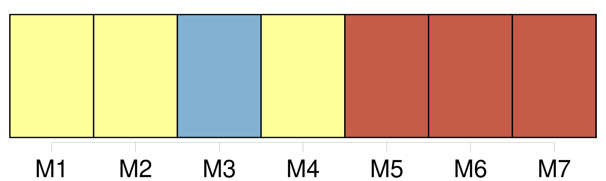
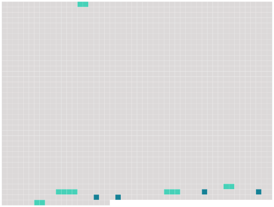

Longueur nb maillons : 9 mentions |
 |
1-45 ) [89 phrases] [L'avenue] lui paraissait démesurée. Les centaines de lieues qu'il venait de faire n'étaient rien ; [ce bout de route] le désespérait, jamais il n'arriverait à ce sommet, couronné de ces lumières. [L'avenue plate] s'étendait, avec [ses] lignes de grands arbres et de maisons basses, [ses] larges trottoirs grisâtres, tachés de l'ombre des branches, les trous sombres des rues transversales, tout [son] silence et toutes [ses] ténèbres ; et les becs de gaz, droits, espacés régulièrement, mettaient seuls la vie de leurs courtes flammes jaunes, dans ce désert de mort. Florent n'avançait plus, [l'avenue] s'allongeait toujours, reculait Paris au fond de la nuit. |
 |
Il est possible de télécharger la ressource sur la page Ortolang |
Si vous avez des questions ou vous voyez des erreurs, merci d'envoyer un mail à silvia.federzoni89@gmail.com |